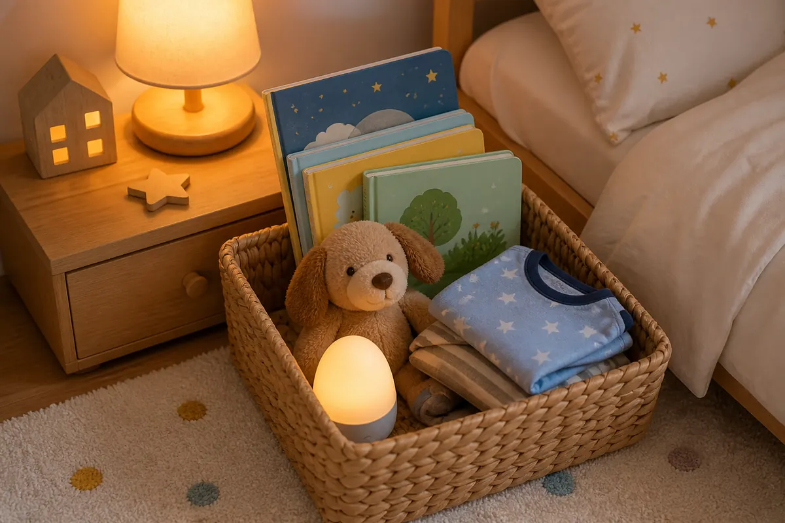

1. Set the mood with sensory cues
Dim the lights, lower voices, play the same gentle soundtrack, and invite your child to choose one plush “sleep helper.” Repeating the same cues each night matters because children relax faster when they can predict what comes next.
Graphic cue: point to the moon, then whisper, “The room is getting sleepy, and so are we.”
2. Practice a “three breaths” check-in
Sit shoulder-to-shoulder and take three slow breaths: smell the flower, cool the soup, rest the shoulders. Then ask, “What color is your feeling tonight?” This gives big emotions a simple shape before the story begins.
Try this: if your child says “red” or “stormy,” answer with empathy first: “That was a big-feeling day. I’m here.”

3. Create a story basket
Fill a small basket with three to five meaningful objects: a seashell, ribbon, tiny animal, family photo, or paper star. Let your child pick one object to inspire the night’s Baboo Stories adventure, then add one personal detail: “This shell remembers our beach day.”
Keep it calm: offer only a few objects. Too many choices can wake up decision-making energy right when you want bedtime to narrow and soften.
4. Add a gratitude glow
After the story, hold a tiny “gratitude glow” light—a small lamp, night-light, or flashlight wrapped with tissue paper. Take turns naming one good thing from the day. Keep it short and specific: “I liked when we laughed at breakfast.”
Why it works: gratitude redirects attention away from one-more-thing requests and toward connection, safety, and closure.
5. Seal it with a sleepy stretch
Guide a soft “star stretch”: arms reach up like rays, hands float down like feathers, then knees curl into a cozy moon shape. Pair the movement with the same closing affirmation every night: “My body is safe, my story is done, and my dreams can begin.”
Parent shortcut: use the same final sentence even on chaotic nights. Familiar words become a landing place.
Make it visual: a mini bedtime chart
Children often follow pictures before they follow instructions. Save this five-step order as your family’s bedtime chart, or draw the icons on sticky notes and let your child flip each one over when it is complete.
Keep the magic going
Explore more bedtime ideas in our storytelling prompts guide or get free story updates to receive exclusive rituals straight to your inbox.
Baboo Stories is a calmer bedtime story app for parents who want to read, bond, and help toddlers wind down with gentle read-aloud stories.